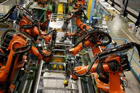
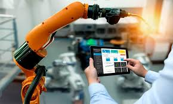
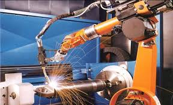

Los robots industriales son máquinas automatizadas utilizadas en fábricas para aumentar la productividad, precisión y seguridad.
Los primeros robots industriales aparecieron en la década de 1960 y revolucionaron la manufactura moderna.
Actualmente son utilizados en industrias automotrices, electrónicas, farmacéuticas y alimenticias.
Empresas como ABB, FANUC, KUKA y Yaskawa desarrollan algunos de los robots más avanzados del mundo.


